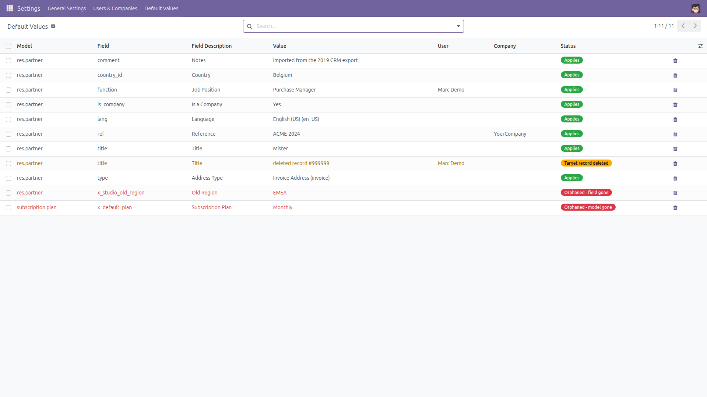
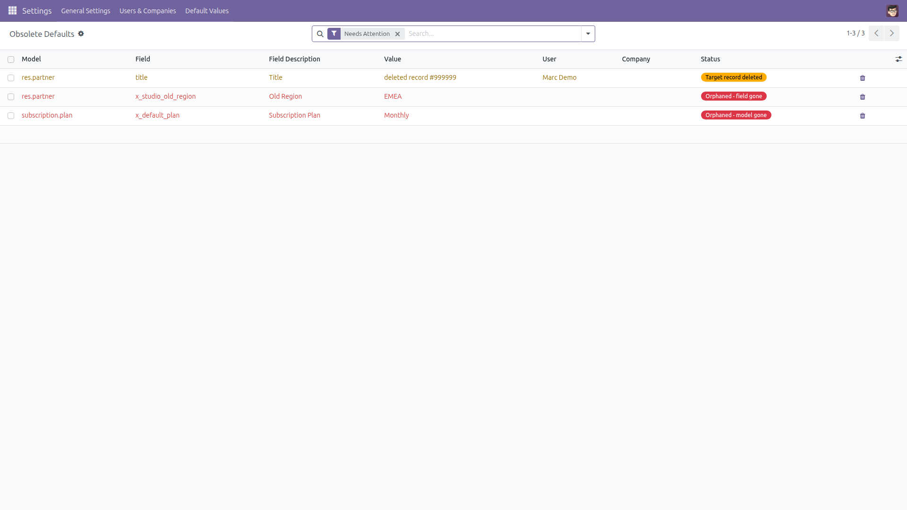
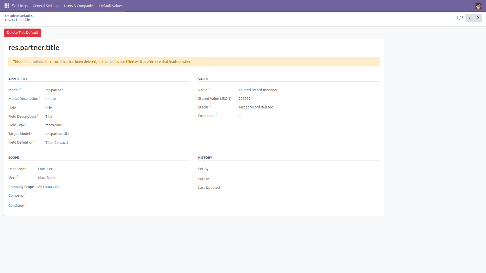
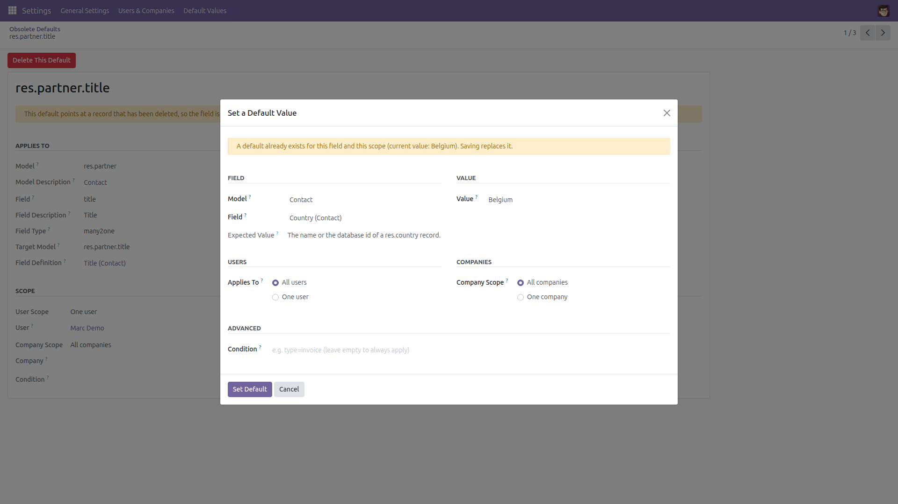
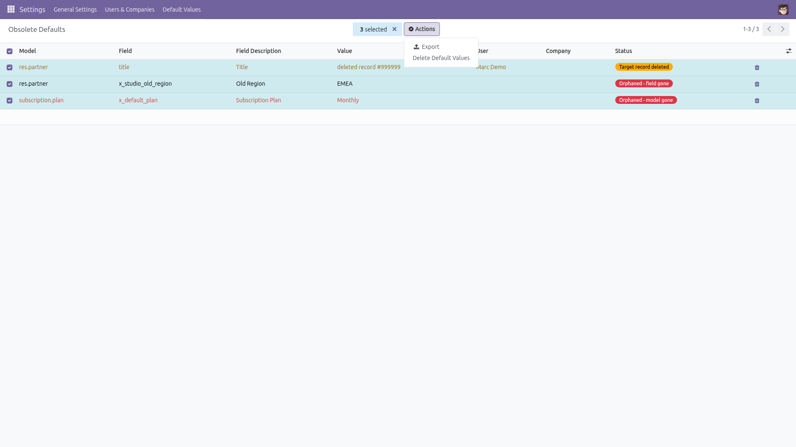

Manage Default Values
Why does this field keep pre-filling itself?
Somebody once used “Set Default” in developer mode. Odoo wrote a row in ir.default and never showed it again. Months later a field arrives pre-filled with a value nobody recognises, and there is no screen to look it up. This module adds that screen: every default value in your database, in readable form, with its scope — and a confirmed delete for the ones that are obsolete.
Free and open source (LGPL-3), Odoo 14.0 through 19.0.
- Every default, listed — model, field, technical name and label, all in one list.
- The value, readable —
ir.default stores raw JSON. Many2one ids are resolved to the record name, booleans become Yes/No, selections show their label, long values are shortened.
- The scope, spelled out — all users or one named user, all companies or one named company, plus the optional condition the default is restricted to.
- Obsolete entries flagged, never crashed on — a default whose model or field no longer exists is marked Orphaned; one pointing at a deleted record is marked Target record deleted; a value that is not readable JSON is marked and shown raw. The list keeps working in every case.
- Search, filter and group — filter by status or scope, search on the model, the field or even the readable value itself, group by model, field, user or company. Export to spreadsheet.
- Delete, on purpose — one row at a time with a confirmation, or several at once through the Action menu with a preview of exactly what goes. Deleting a default only stops that field from pre-filling: no record, no field and no other setting is touched, and records already created keep the value they were given.
- Add a default without developer mode — pick a model and a field, type the value (a record name or id for many2one, a key or a label for a selection) and it is validated and written through Odoo’s own
ir.default.set().
- Administrators only, multi-company aware — the screen is restricted to the Administration / Settings group, and an administrator restricted to some companies sees and deletes only the defaults of those companies, plus the ones that apply to every company.
Screenshots

Every default value: model, field, the value in readable form, the user and the company it applies to. An empty User means “all users”; an empty Company means “all companies”.

The Obsolete Defaults list: orphaned entries whose model or field is gone, and defaults pointing at a record that has been deleted.

The detail of one default: what it applies to, the readable value next to the raw JSON, its scope, and who set it when.

Adding a default: the expected value is explained per field type, an existing entry for the same scope is announced before it is replaced, and the value is validated before anything is written.

Cleaning up: select the obsolete entries and use Delete Default Values in the Action menu. A confirmation screen lists exactly what will be removed.
Installation
- Copy the module into your addons path, or install it from the Apps list.
- Open Apps, remove the “Apps” filter, search for Manage Default Values and click Install.
- Only the standard
base module is required.
Configuration
- No configuration is needed — the screen works as soon as the module is installed.
- Access is restricted to the Administration / Settings group; no other user can read or delete a default value from here.
- Multi-company: switch to the company whose defaults you want to manage. Defaults that apply to every company are always visible.
Usage
- Go to Settings → Default Values → All Default Values.
- Find the culprit: type the model or field in the search bar, or search directly on the readable Value.
- Open Obsolete Defaults for the entries that can no longer work: orphaned model or field, deleted target record, unreadable value.
- Delete one entry with the bin icon on its row, or tick several and choose Delete Default Values in the ⚙ Action menu. Both ask for confirmation first.
- To create a default, use Settings → Default Values → Set a Default Value: choose the model and field, type the value, choose whether it applies to all users or one, to all companies or one.
- Group by Model, Field, User or Company — status is offered as a filter rather than a grouping — or export the list, for a configuration review.
Good to know
- Deleting a default value only removes the pre-fill. Records created earlier keep the value they were given; no record, no field and no other setting is modified.
- The screen covers what Odoo stores in
ir.default. Defaults written in Python code (a field’s default=) live in the source, not in the database, so no screen can list or remove them — those are not shown here.
- A default is orphaned when its model or its field no longer exists in the database. The entry survives because it is attached to a leftover field definition; it can never apply again and is safe to delete.
- The Set a Default Value screen accepts text, numbers, dates, booleans, selections and many2one fields. Defaults on many2many, one2many, binary or reference fields are listed and can be deleted, but cannot be typed in from that screen.
- Rendered values longer than 200 characters are shortened with an ellipsis; the raw JSON is always available in its own column.
License: LGPL-3 · Source on GitHub · Issues and contributions welcome.